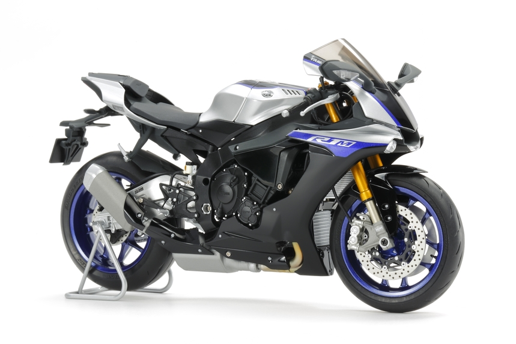
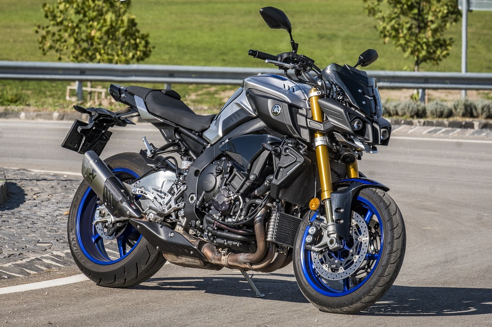
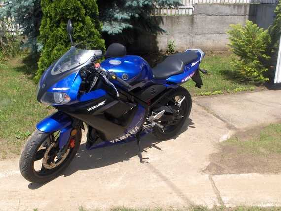

|

Yamaha YZF-R1M
Állapot: Kitűnő (Gyári)
Típus: Sport/Gyorsasági Évjárat: 2022 Okmányok: Okmányok nélkül Műszaki adatok: Letölthető JPG file Vételár: 8,200,000 Ft |

Yamaha MT-10 SP
Állapot: Kitűnő (alig használt)
Típus: Naked bike Évjárat: 2021 Okmányok: Magyar okmányok Műszaki adatok: Letölthető JPG file Vételár: 6,100,000 Ft |

Yamaha TZR 50
Állapot: Felújítást igényel
Típus: Sport/Gyorsasági Évjárat: 2006 Okmányok: Magyar okmányok Műszaki adatok: Tovább a weboldalra Vételár: 350,000 Ft |